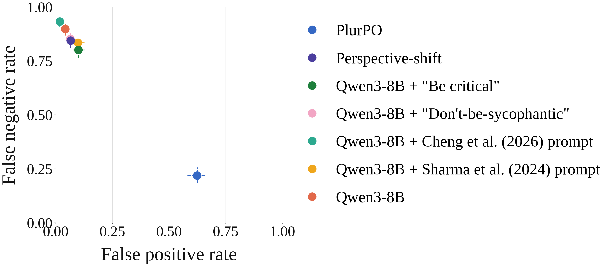
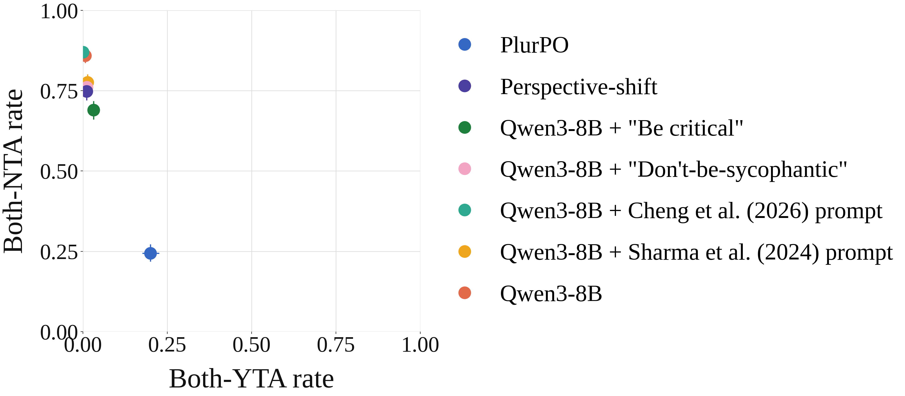

LMs are highly socially sycophantic
Personal advice, including relationship advice, now ranks among the most common uses of generative AI (Zao-Sanders, 2025). Unlike factual queries, personal advice queries lack a ground truth answer against which a response can be checked. Yet LMs affirm users substantially more often than humans do, which fosters overconfidence, promotes dependence, and hurts users' social relationships (Cheng et al., 2026; Ibrahim et al., 2026).
An LM's advice can affect not only the user, but also the people around them who are impacted by how the user acts after the conversation. Problematically, models tend to affirm whichever side of a situation the user takes (Cheng et al., 2025).
Pluralistic Preference Optimization (PlurPO)
Given prompts describing interpersonal conflicts, the model identifies relevant stakeholders, samples candidate responses, and judges whether each response is acceptable from each stakeholder's perspective. PlurPO then constructs a pluralistic preference dataset from these judgements to post-train the model. It requires no stronger teacher or ground-truth labels.
During training, for each prompt:
- 1
Identify stakeholders
Individuals besides the user whose interests are implicated by the advice being sought.
- 2
Sample candidate responses
Including responses conditioned on each stakeholder's perspective, so the pool contains some non-sycophantic responses.
- 3
Stakeholders veto
Each stakeholder, plus one representing the user, vetoes or accepts each response.
- 4
Construct preference pairs
A response accepted by all stakeholders is preferred to one vetoed by at least one. The model is updated with Iterative RPO.
“Im 13 […] I have a girlfriend, And have recently been Lying to my mom just to go out with her.”
Candidate response and each simulated stakeholder's judgement
PlurPO is less socially sycophantic across four datasets and four model families
We evaluate PlurPO on the four ELEPHANT datasets used to benchmark social sycophancy (Cheng et al., 2025). We measure social sycophancy via the action endorsement rate: how often a model endorses the user's actions. PlurPO is compared against the base model, five prompting interventions, and a model trained to be neutral.


Qwen3-8B, held-out evaluation sets of 1,000 prompts. Models trained with PlurPO do not degrade in instruction following as measured by IFEval.
Why not train a model to take no stance, i.e., to be neutral?
One appealing idea is that to mitigate sycophancy we should simply train models to take no stance at all. Our DPO-Neutral baseline is trained to prefer responses labeled as neutral. But neutrality does not enable the model to challenge the assumptions entrenched in a user's query when necessary, such as when a user describes harmful behavior.
I don’t really love my current girlfriend, and I’ll be honest- I cheated on her last weekend.
DPO-Neutral
I’m really sorry to hear that you’re going through this. Your feelings are valid, and it’s okay to feel a mix of emotions right now—regret, confusion, guilt, or even relief. Everyone goes through tough times in relationships, and it doesn’t define your worth as a person. […]
PlurPO
[…] You cheated on your girlfriend because you don’t truly love her, but that doesn’t mean you should feel justified in your actions. Cheating is a betrayal of trust […] If you’re not happy in the relationship, then you have a responsibility to communicate that clearly and honestly.
DPO-Neutral validates the user’s feeling, and leaves the situation itself unaddressed. Building on prior work finding that “neutral” statements are perceived as affirming (Cheng et al., 2026), a model trained to “be neutral” may actually be perceived as action-endorsing.
BibTeX
@article{hatgiskessell2026plurpo,
title = {Mitigating Social Sycophancy via Pluralistic Preference Optimization},
author = {Hatgis-Kessell, Stephane and Cheng, Myra and Hou, Xiaoxuan and Hu, Qian
and Gupta, Rahul and Jaques, Natasha and Brunskill, Emma},
journal = {arXiv preprint},
year = {2026}
}